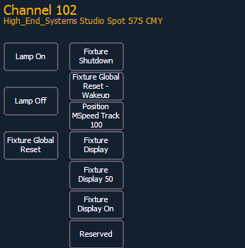

Lamp controls allow you to execute control functions of selected fixtures such as calibrate, douse lamp, strike lamp and reset. Each fixture type has its own set of lamp control options which are available to you when you select the fixture from Live and press the {Lamp Cntrls} softkey. This information is also available using [About] (see Using About ).
For Example:
-or-
This screen displays any lamp controls associated with the selected channel (this is also the “Lamp Controls” subscreen of About). If the channel is a conventional (intensity-only) fixture, no parameters will be displayed. When the selected channel is an automated fixture, options specific to the fixture type will display for use. Available RDM functions will also display here.

Pressing any of these parameter controls buttons will affect the selected channel after a confirmation.
Exit the lamp controls display by pressing [Displays].